Week 4 — Documentation
1. What the application does
It is the same three-container app I built for the Docker Compose exercise, now running on Rahti. There is an nginx frontend that serves the page you are reading, a Flask backend that gives a REST API, and a MySQL 8.4 database that keeps its data on a persistent volume.
Only the frontend has a Route, so only the frontend can be reached from the internet. The backend and the database only have Services, which work inside the project.
Internet -> Route -> Service frontend:8080 -> nginx Pod
| proxy_pass /api
v
Service backend:8000 -> Flask Pod(s)
|
v
Service db:3306 -> MySQL Pod
|
PVC db-data (standard-csi)
The frontend does not know any Pod IP address. In
nginx.conf there is only one line that points to the
backend, and it uses the Service name:
location /api {
proxy_pass http://backend:8000;
}
Read and write operations
The endpoint /api/info does both things that the
assignment asks for. First it writes: every page load inserts one row
into the visits table. Then it reads: it runs
SELECT NOW() to get the MySQL server time and counts the
rows in visits. Both results are shown on the front page.
There is also a guestbook. When you save a message it is sent with
POST to /api/messages and stored in the database. I used
it a lot for testing, because a message is easier to recognise than a
number.
I first ran everything locally with Docker Compose to check that the code works before moving to Rahti.
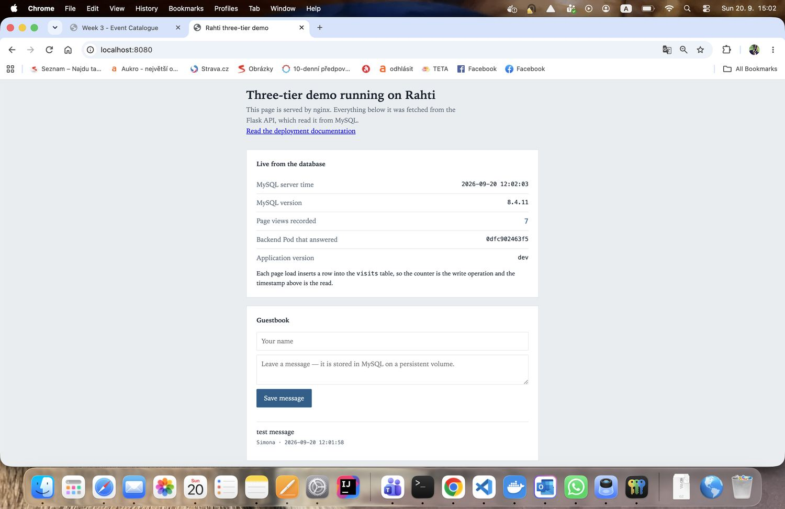
localhost:8080. Version says
dev because locally the version is not set. The counter
was 7 and one test message was saved.
Images
Both images are built for linux/amd64 and pushed to
Docker Hub as public repositories, so Rahti can pull them.
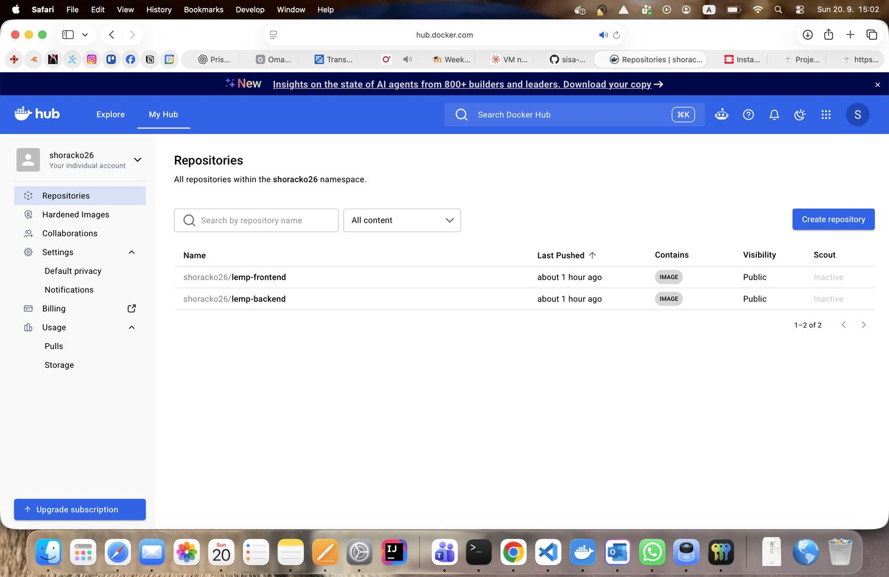
shoracko26/lemp-frontend and
shoracko26/lemp-backend on Docker Hub, both public.
2. Evidence: frontend → backend → database
I applied all the manifests from the k8s/ folder and all
three Pods started.
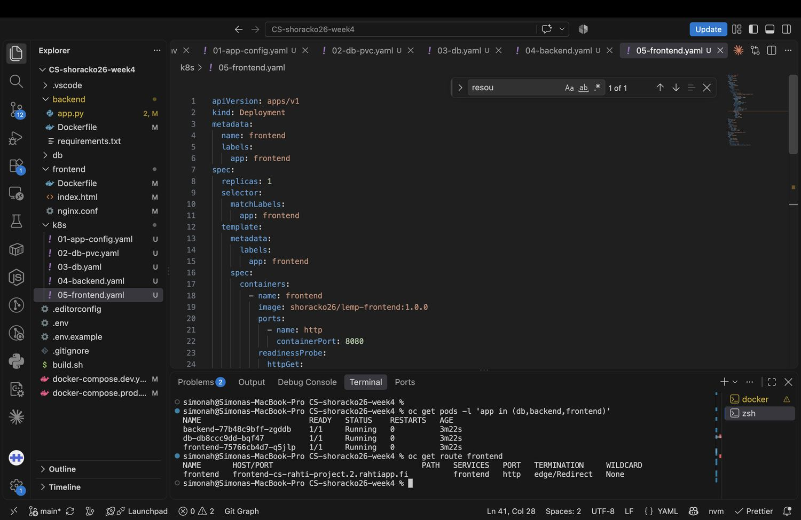
1/1 Running with 0 restarts, and
oc get route frontend shows the public address
frontend-cs-rahti-project.2.rahtiapp.fi.
Then I opened the Route in the browser. The MySQL server time and the MySQL version cannot be made up by nginx or by Flask — they can only come from the database. So if they appear on the page, the whole chain works.
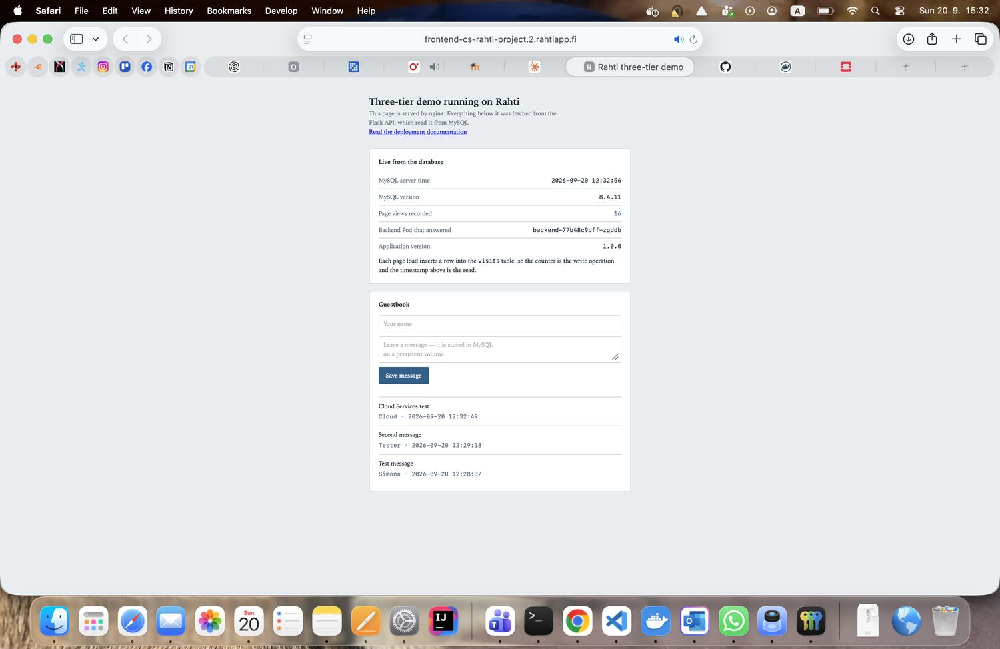
I also reloaded the page several times and the counter kept growing, which shows that the write really happens on every request and is not just a static number.
3. Evidence: database persistence
The database uses a PersistentVolumeClaim called db-data,
2 Gi from the standard-csi storage class. To test that
the data survives, I deleted the MySQL Pod on purpose.
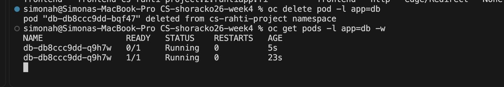
oc delete pod -l app=db. The old Pod
db-db8ccc9dd-bqf47 was deleted and a new one
db-db8ccc9dd-q9h7w started and became ready in 23
seconds.
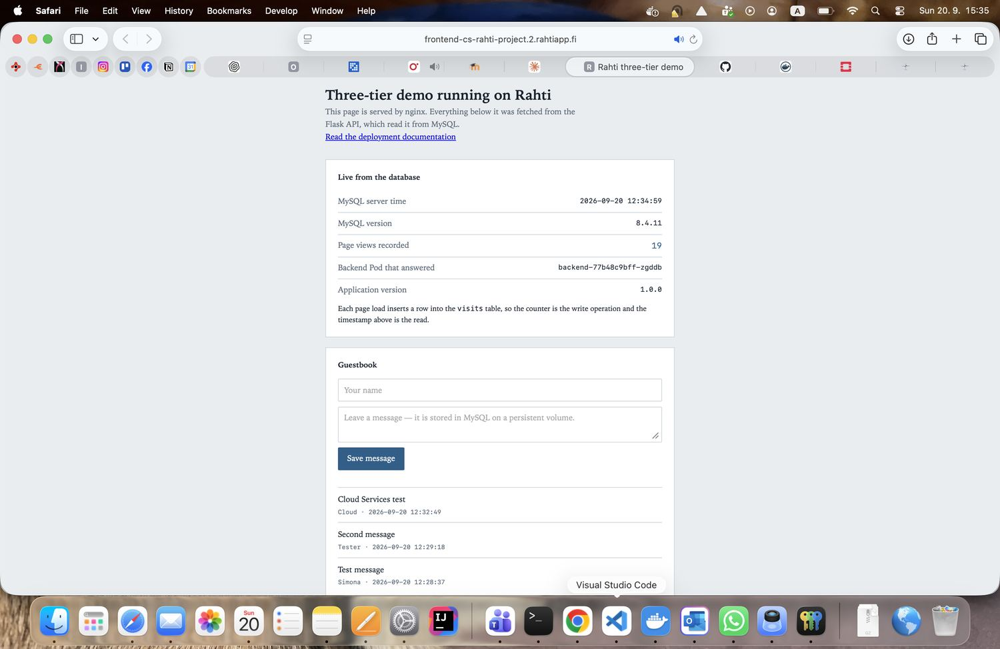
| before | after | |
|---|---|---|
| MySQL Pod | db-db8ccc9dd-bqf47 | db-db8ccc9dd-q9h7w |
| Page views | 16 | 19 |
| Guestbook | 3 messages | same 3 messages |
The Pod is really a different one (different name, age only a few minutes), so the data is clearly not stored inside the container. It is on the volume, and the new Pod mounted the same volume again.
How this is different from a Docker volume
In the Docker Compose exercise the volume was just a directory on the one virtual machine where everything was running. Docker created it by itself when the container asked for it, and it only existed on that machine. If the VM was gone, the data was gone with it.
In Rahti the storage is its own object in the cluster. I do not say where the disk should be or how to make it. I only write a PersistentVolumeClaim that says "I want 2 Gi of this class" and the cluster gives it to me from Ceph storage. The volume belongs to the claim, not to a Pod, so any Pod that the scheduler starts anywhere in the cluster can mount it again. That is exactly why the data survived.
4. Pod recovery experiment
I deleted the backend Pod manually and watched what happened.
| Deleted Pod | backend-77b48c9bff-zgddb (12 min old) |
| New Pod | backend-77b48c9bff-8lnvr, ready in 13 s |
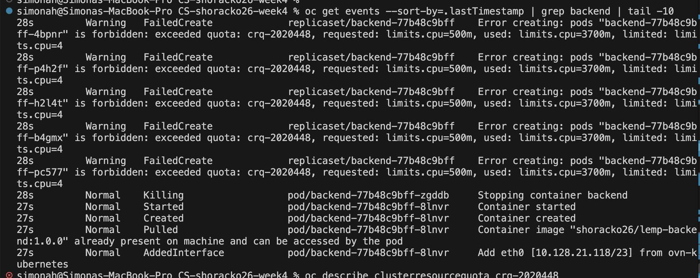
oc get events during the recovery.
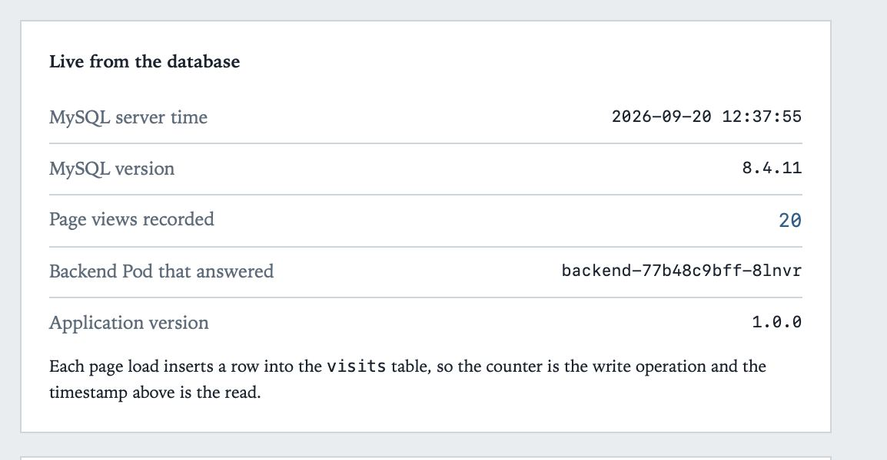
backend-77b48c9bff-8lnvr, and the counter continues
from 20. The user does not notice anything.
Why does a new Pod appear?
Because in Kubernetes I do not start Pods, I only describe how many
should exist. The Deployment says replicas: 1. A
controller compares all the time how many Pods with the label
app: backend are running with how many should be running.
When I deleted the Pod, the real state was 0 and the wanted state was
1, so the controller made a new one.
Which resource is responsible?
The ReplicaSet. You can even see it in the Pod names:
the old and the new Pod both start with
backend-77b48c9bff, which is the name of the ReplicaSet
that owns them. The Deployment is one level above — it creates the
ReplicaSet and makes a new one when the app version changes.
In the events there is something I did not expect. Creating the new
Pod failed five times with
exceeded quota: crq-2020448, requested: limits.cpu=500m, used:
limits.cpu=3700m, limited: limits.cpu=4. The project CPU quota was full, because the old Pod was still
terminating and still holding its CPU. Only when the old Pod was
really gone did the new one start. I think this actually shows the
idea very well: the ReplicaSet did not try once and give up. It kept
trying until the wanted state was possible.
5. Scaling experiment
First I had to lower the CPU limit of the backend from 500m to 200m, because of the quota above. After that three replicas fit.
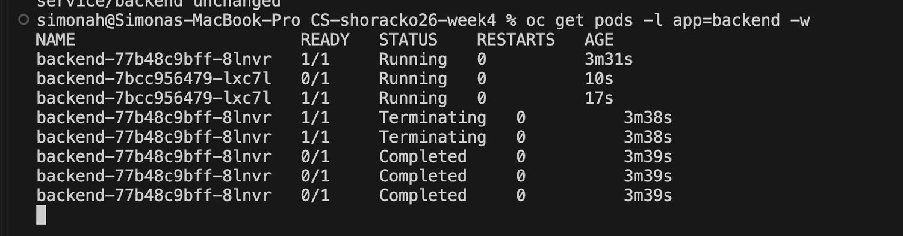
backend-7bcc956479-lxc7l became
1/1 at 17 seconds and only after that the old
backend-77b48c9bff-8lnvr went to
Terminating.
oc scale deployment/backend --replicas=3
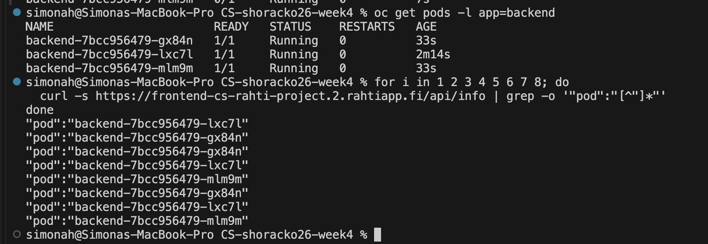
/api/info in a row. The pod field in the
answer is not the same every time: gx84n answered three
times, lxc7l three times and mlm9m twice.
How can the frontend still find the backend?
I did not change anything in the frontend. No new address, no restart,
nothing. nginx still has only
proxy_pass http://backend:8000.
This works because backend is a Service, not a Pod. The
Service has one stable ClusterIP and a DNS name inside the project,
and it sends the connections to whichever Pods have the label
app: backend right now. Pod IP addresses change every
time a Pod is replaced, and they are not written anywhere in my
configuration. That is why scaling is invisible to the frontend.
I scaled the backend back to 1 replica after the experiment. I did not scale the database, because its volume is ReadWriteOnce and two MySQL servers cannot use the same data directory anyway.
6. Application update
I changed the heading on the front page, built new images with the tag
1.0.1 and pushed them.
docker build --platform linux/amd64 --build-arg APP_VERSION=1.0.1 \ -f backend/Dockerfile -t shoracko26/lemp-backend:1.0.1 . docker build --platform linux/amd64 \ -f frontend/Dockerfile -t shoracko26/lemp-frontend:1.0.1 . docker push shoracko26/lemp-backend:1.0.1 docker push shoracko26/lemp-frontend:1.0.1
Pushing alone changed nothing on Rahti. The old version kept running until I told the cluster to use the new one:
oc patch configmap app-config -p '{"data":{"APP_VERSION":"1.0.1"}}'
oc set image deployment/backend backend=shoracko26/lemp-backend:1.0.1
oc set image deployment/frontend frontend=shoracko26/lemp-frontend:1.0.1
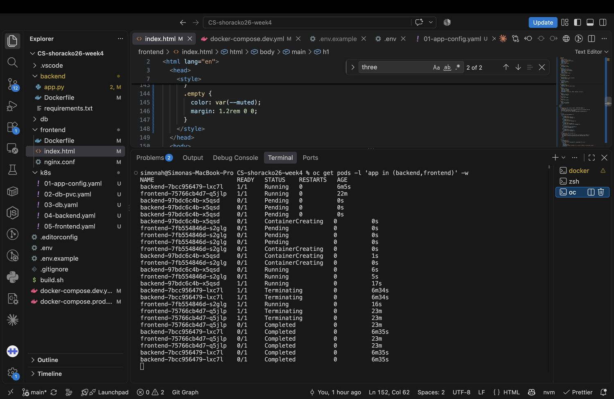
backend-97bdc6c4b-x5qsd and
frontend-7fb554846d-s2glg start first, and the old ones
go to Terminating only after the new ones are
1/1.
What happens to the old and new Pods
The order in the output is the interesting part. The new backend Pod was ready at 17 s and only then the old one started terminating. The frontend did the same: new Pod ready at 16 s, old one terminating after that. So there was never a moment without a working Pod and the page never went down.
The readiness probe is what makes this safe. Until the probe passes, the Service does not send any traffic to the new Pod and the Deployment does not continue.
The name prefixes also changed: backend from
7bcc956479 to 97bdc6c4b, frontend from
75766cb4d7 to 7fb554846d. Every version gets
its own ReplicaSet and the old one stays with 0 replicas, which is why
oc rollout undo can go back.
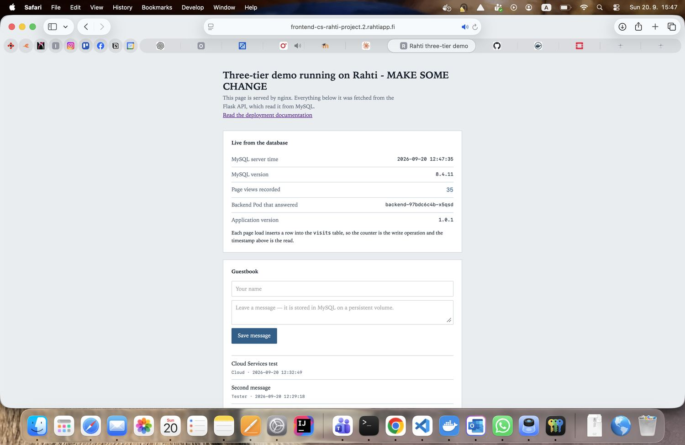
1.0.1, and the new backend Pod
backend-97bdc6c4b-x5qsd. The guestbook messages are
still there, because the database was not touched.
One thing I noticed: the heading came from the new image, but the version number on the page came from the ConfigMap patch. So configuration and code can be changed separately. If I only wanted to change the version text, I would not need to build anything at all.
7. Configuration and secrets
Nothing is hard-coded in the images. The ConfigMap
app-config has the database host, port, database name,
user name and the application version. The Secret
db-secret has the MySQL root password and the application
password.
Why are ConfigMap and Secret two different things?
Not because one is encrypted — a Secret is only base64, and base64 is not protection. They are different because the cluster treats them differently. A Secret is its own resource type, so it can have its own RBAC rules, it is kept out of normal listings and logs, and tools know that they should be careful with it. A ConfigMap is just normal project data that anybody in the project can read, and that is fine for a database name or a port number.
One nice thing is that MySQL and the backend read the same password from the same Secret key. So they cannot get out of sync, which could easily happen if I wrote the password in two places.
8. Problems I had and how I solved them
Containers do not run as root
This was the biggest one. Rahti gives every container a random user ID
that I cannot know in advance. My old images assumed root: nginx
listened on port 80, wrote its PID to
/var/run/nginx.pid and its temporary files to
/var/cache/nginx. None of that is allowed.
I changed nginx to listen on 8080 (ports under 1024 need root), moved
the PID file and all temp paths to /tmp, and in both
Dockerfiles I added chgrp -R 0 and
chmod -R g=u on the app directories. The random user is
always in group 0, so if the group can write, it works whatever ID
Rahti picks.
Wrong CPU numbers
My first oc apply created the Deployments but no Pods
appeared at all. The error was in oc get events, not in
oc get pods:
cpu max limit to request ratio per Container is 5, but provided
ratio is 10
and
minimum cpu usage per Container is 50m, but request is 20m. The project has a LimitRange with stricter rules than I expected. I
fixed the requests and limits in all three files and then it worked.
MySQL and lost+found
MySQL refuses to start if its data directory is not empty, and a fresh
volume already contains lost+found. The fix was to mount
the volume with subPath: data, so MySQL gets a clean
subfolder.
Wrong CPU architecture
I have a MacBook with an M2 chip, so docker build makes
arm64 images by default, but Rahti runs on x86. This would have been
nasty, because the image builds and pushes without any error and only
fails in the cluster with exec format error, which does
not say anything about architecture. I added
--platform linux/amd64 to every build.
Project CPU quota
Described in the Pod recovery section. My week 2 and week 3 apps are still running in the same project and they use most of the CPU quota, so I had to lower the backend CPU limit before I could scale to three replicas.
9. Rahti compared with Docker Compose on cPouta
It is the same three containers and the same application code. What is really different is who makes the application exist, how the parts find each other, and what happens when something breaks.
How it is deployed
On cPouta I first had to make a machine: launch an instance, attach a
floating IP, open ports in a security group, install Docker and run
docker compose up. The deployment was that list of
actions. Compose read my file once, created the containers, and then
it was finished — the file described a starting point, not something
anybody keeps checking.
On Rahti there is no machine in my picture at all. I send objects that describe the state I want, and controllers keep reality the same as that, all the time. This is why deleting a Pod is not a problem here: the ReplicaSet sees the difference and fixes it. With Compose, recovery was me noticing and typing a command, and if the VM itself died there was nothing left to recover on.
How it is networked
Compose gave the three containers a private network on one host, where
backend meant that one container. It worked because there
was exactly one of everything, and it would stop working as soon as
there was not. In Rahti backend is a Service in front of
a changing group of Pods chosen by a label, which is why my scaling
test worked without changing the frontend at all.
Exposing the app also works the other way round. On cPouta I published a port and then closed everything else with firewall rules I had to remember. In Rahti nothing is reachable from outside unless a Route says so, so the backend and the database are private by default, not because I remembered a rule. The Route does HTTPS for me too.
How it is managed
Managing the cPouta version meant managing a server: SSH in, run
commands, read logs there, update the OS. Configuration was a
.env file on that machine, protected mostly by file
permissions.
On Rahti I work with objects through the API. Configuration is in a ConfigMap, passwords are in a Secret with their own access control, and neither is in Git. Logs and events come from the cluster instead of from a host. An update is a controlled rollout with health checks and a history I can roll back, instead of stopping containers and starting new ones and hoping.
What it costs
Compose is much easier to understand: one file, one machine, one place where things can go wrong. Rahti gives resilience and repeatability instead, but at the price of many more objects, platform rules my images have to follow, and no host to log into when something breaks.